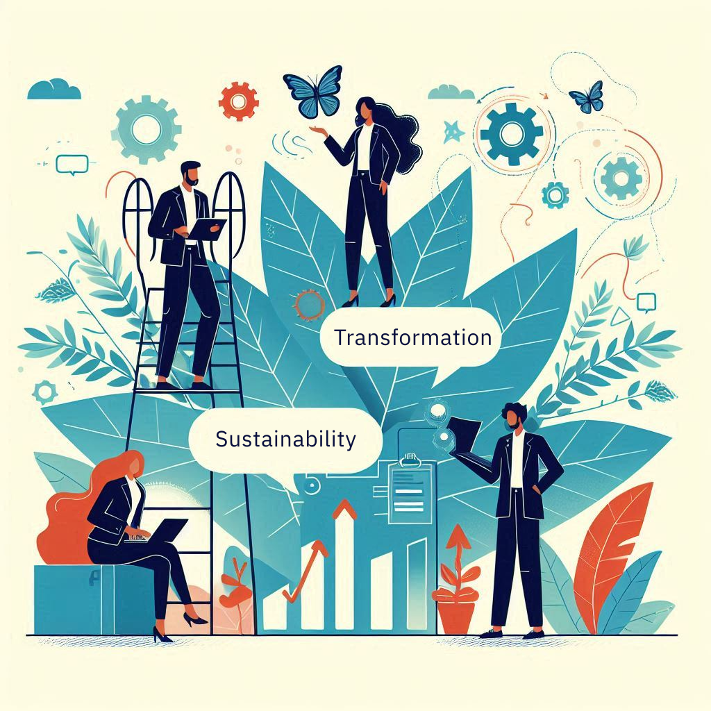

Why are our services a must?
Digital solutions are never just tech. Success depends on clear priorities and measurable results.
Many businesses fail to define their priorities and identify key performance indicators (KPIs), leading to a lack of focus. We help you define these crucial elements to ensure your digital solutions deliver real value and achieve desired outcomes.
Learn More About Our ApproachPresentation: The Boat Analogy for Website and Digital Marketing
Understand the components of a successful website and digital marketing strategy through the boat analogy.
View Presentation